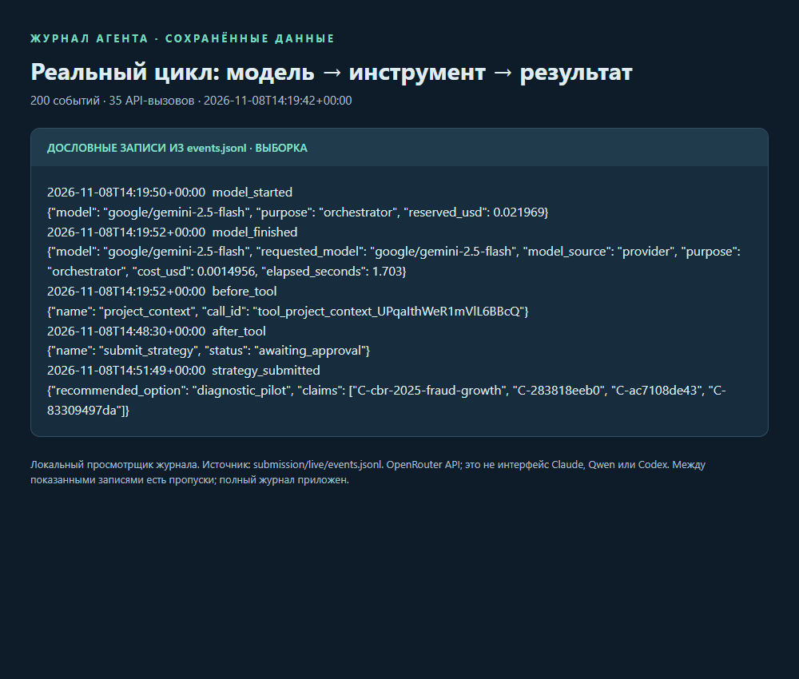
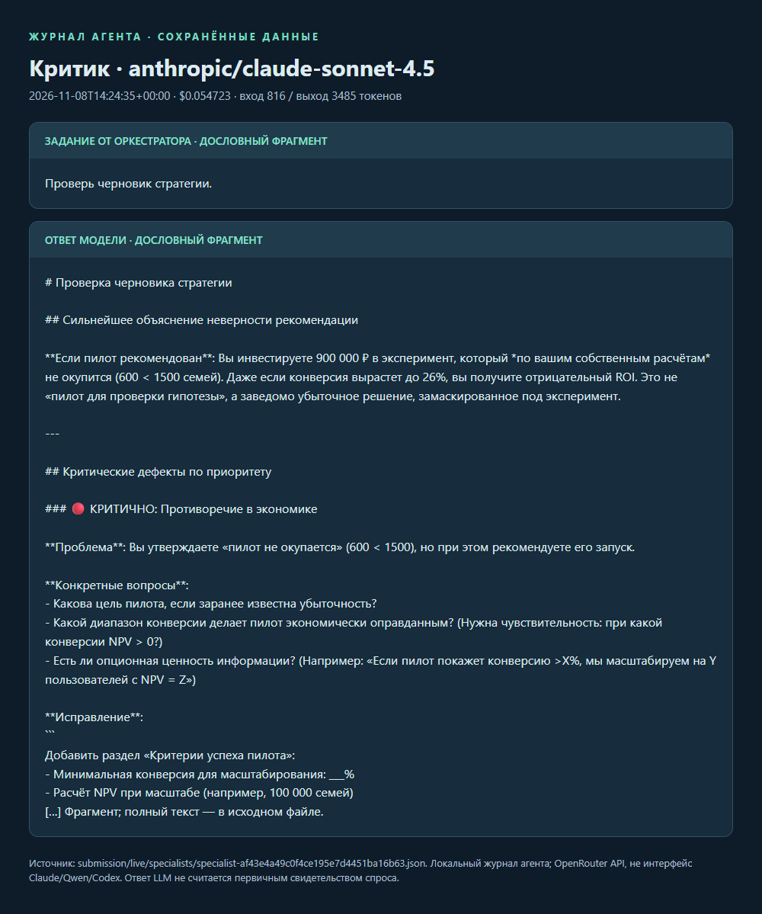
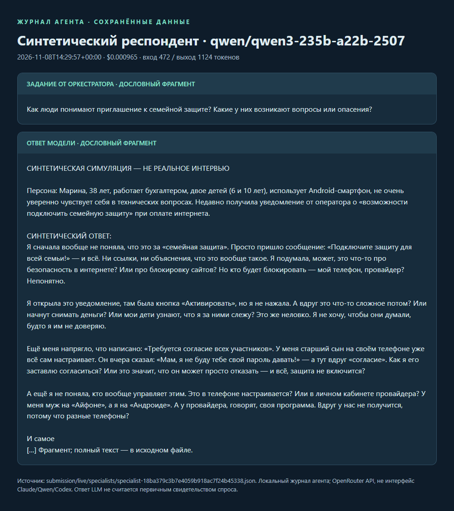
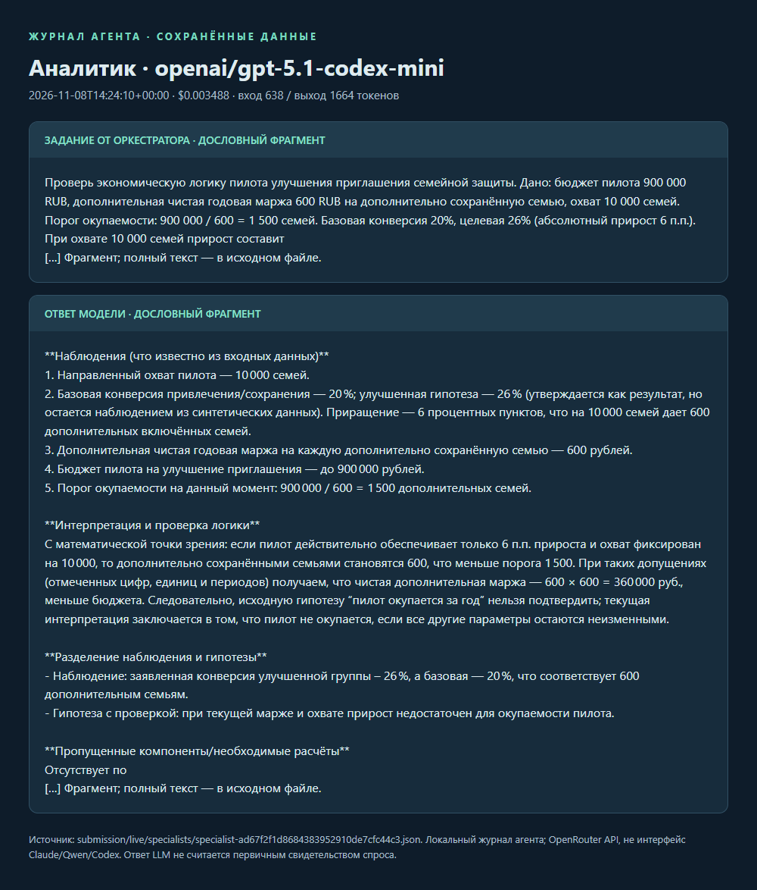
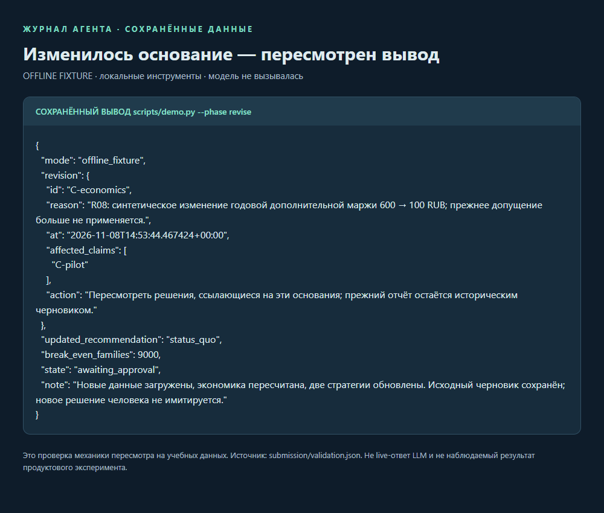

ПЕРЕНОСИМЫЙ ИИ-АГЕНТ ДЛЯ РУКОВОДИТЕЛЯ ПРОДУКТА
Решение, которое можно
проверить и пересмотреть.
От открытых источников и расчётов — к альтернативам, продуктовой и коммуникационной стратегиям, выбору человека и памяти решения.
awaiting_approval. Скриншоты в документе показывают сохранённые вызовы и ответы в локальном просмотрщике журнала.Итоговая стратегия доработана после редакторской проверки Codex. Это результат с вмешательством оператора; исходный модельный ответ сохранён отдельно.
Кейс: «Круг доверия», семейная цифровая безопасность. Официальный бриф не предоставлен. Стратегия остаётся черновиком до содержательного решения руководителя.
Репозиторий и быстрый старт · Фактический итог прогона
Дата и время первого вызова: 2026-11-08T14:19:42+00:00. Часовой пояс указан в исходной записи.
Руководителю нужно выбрать, во что вложить следующий ресурс, когда данные неполны, источники расходятся, а привлекательное обещание ещё не подтверждено продуктом.
Учебная постановка: падает активация семейного цифрового сервиса. Сравнить сохранение текущего решения, улучшение подключения, отдельную подписку и закрытие направления. Не превращать статистику мошенничества в оценку спроса на конкретную функцию.
| Вход | Работа агента | Выход для решения |
|---|---|---|
| Бриф, ограничения, материалы | Формулирует вопросы, меняющие выбор | Явные допущения и пробелы |
| Источники, таблицы, наблюдения | Сохраняет происхождение и локаторы; считает локально | Реестр проверяемых оснований |
| Альтернативы и возражения | Привлекает ограниченные роли специалистов | Различающиеся варианты и условия смены выбора |
| Выбор руководителя | Фиксирует решение и обязательства | Владелец, метрика, срок и стоп-условия |
| Новые сведения | Находит зависимые выводы | История пересмотра, а не молчаливая замена ответа |
Ценность реализации: расчёт и источник можно открыть отдельно от красивого текста; незавершённая работа сохраняется; существенный выбор остаётся у человека. Рыночный эффект и превосходство над аналитиком этим не доказаны.
Первый интерфейс — привычная среда Cursor/Codex. Для воспроизведения есть CLI; для подключения инструментов редактора — локальный MCP. Не требуются веб-сервер и отдельная база данных.
google/gemini-2.5-flash13 выз. · $0.0716anthropic/claude-sonnet-4.519 выз. · $1.7088openai/gpt-5.1-codex-mini1 выз. · $0.0035anthropic/claude-sonnet-4.51 выз. · $0.0547qwen/qwen3-235b-a22b-25071 выз. · $0.0010| Слой | Что обеспечивает |
|---|---|
| AGENTS.md / prompts / skills | Постоянные инструкции и повторяемые процедуры; материалы не могут их менять |
| knowledge/ | Методика анализа, экономики, экспериментов, интервью и памяти |
| materials/ → artifacts/ | Разделение входных данных, свидетельств и выводов |
| state/ | Продолжение после паузы; платный ответ сохраняется до исполнения инструментов |
| Codex, среда разработки | Код, проверка и подготовка отчёта. Точный идентификатор модели и стоимость среды не предоставлены |
Узлы модели построены по ledger.json, а не по настройкам маршрутов. Ответ специалиста — производный анализ, не первичный факт. Строка «Codex, среда разработки» описывает рабочую среду; модель OpenRouter с codex в имени учитывается отдельно по журналу.

| Показатель | Сохранённое значение |
|---|---|
| Начало / сохранённое окончание | 2026-11-08T14:19:42+00:00 / 2026-11-08T14:51:49+00:00 |
| Сумма активных запусков цикла | 429.6 с |
| Итоговое состояние | awaiting_approval |
| Журнал | before_tool: 53 · after_tool: 53 · model_started: 35 · model_finished: 35 · route_changed: 5 · context_compacted: 4 |
Время активных запусков не включает паузы на разработку и редакторскую проверку. Полный журнал событий · Все API-запросы и расходы

Результат проверки: в этом ответе смешаны активация и годовое удержание. Вывод о неокупаемости не принят как доказанный; оператор потребовал исправления. Ошибочный ответ сохранён для аудита, а не используется как обоснование итоговой стратегии.
Идентификатор запроса: af43e4a49c0f4ce195e7d4451ba16b63. Полный ответ и происхождение. Путь к файлу промпта и поле prompt_sha256 доступны в артефакте, когда они предоставлены runtime.

Идентификатор запроса: 18ba379c3b7e4059b918ac7f24b45338. Полный ответ и происхождение. Путь к файлу промпта и поле prompt_sha256 доступны в артефакте, когда они предоставлены runtime.

Результат проверки: в этом ответе смешаны активация и годовое удержание. Вывод о неокупаемости не принят как доказанный; оператор потребовал исправления. Ошибочный ответ сохранён для аудита, а не используется как обоснование итоговой стратегии.
Идентификатор запроса: ad67f2f1d8684383952910de7cfc44c3. Полный ответ и происхождение. Путь к файлу промпта и поле prompt_sha256 доступны в артефакте, когда они предоставлены runtime.
ПОСЛЕ РЕДАКТОРСКОЙ ПРОВЕРКИ CODEX · НЕ АВТОНОМНЫЙ РЕЗУЛЬТАТ
Цель исследования: проверить, поможет ли понятное приглашение взрослым родственникам осознанно подключить семейную защиту.
Аудитория-гипотеза: совершеннолетний организатор и совершеннолетний близкий, готовые обсуждать цифровую безопасность. Распространённость такой задачи и спрос неизвестны.
Контекст: ЦБ сообщает о росте учтённых операций без согласия клиентов в 2025 году относительно 2024 года; на регистрацию влияет порядок обращений (C-cbr-2025-fraud-growth). Это не измерение спроса на концепт. Неясный следующий шаг и границы доступа — гипотезы из синтетического интервью (C-ac7108de43).
Альтернативы клиента: ничего не подключать, самостоятельно настроить доступные средства защиты устройства, рассмотреть существующие сервисы. В открытом ко
[…] Фрагмент; полный текст — в исходном файле.
Аудитория и ситуация: предполагаемый взрослый организатор, рассматривающий приглашение близкого. Барьеры понимания и доступа остаются гипотезами из синтетики (C-ac7108de43).
Тестовый текст исследовательского прототипа: «Посмотрите, как устроено приглашение близкого. Прежде чем принять решение, проверьте, кто увидит данные и как отозвать согласие». Кампания не опубликована.
Доказательства перед выпуском: матрица доступа, демонстрация работающих согласия и отзыва, проверка политики и фактических потоков данных. Их наличие сейчас не подтверждено. Макет не доказывает работающую защиту.
Роль каналов: приложение — предполагаемый контекст решения о приглашении; сайт/FAQ — подробное объяснение и примеры границ доступа; модерация исследования — пров
[…] Фрагмент; полный текст — в исходном файле.
Этап диагностики: проверить понимание прототипа и возможность измерить исходную активацию. Качественное интервью не измеряет базовую конверсию; для неё нужна разрешённая телеметрия с определением события и знаменателя. Смета, календарные даты и конкретный владелец пока не согласованы.
Условный следующий этап: A/B-тест текущего и улучшенного приглашения. Случайное распределение подходящих семейных пар 1:1 до приглашения, закрепление группы. Анализ всех назначенных к приглашению пар; обработка недоставленных приглашений, пропусков и исключений определяется заранее. Если это отличается от наблюдаемой базы, baseline и выборку пересчитывают.
Единица — уникальная взрослая семейная пара. Событие активации по R06: обе стороны согласились И завершил
[…] Фрагмент; полный текст — в исходном файле.
Рекомендованный ID: diagnostic_pilot. Сохранённый статус: draft.
Выдержки из итоговой редакции. Модельный черновик сохранён дословно: до редактуры. Итог: после проверки. Автор, перечень правок и хеши версий. Следующие страницы — отдельный авторский демонстрационный кейс, не ответ модели.
АВТОРСКИЙ КЕЙС · ОТКРЫТЫЕ ИСТОЧНИКИ + ПОМЕЧЕННАЯ СИНТЕТИКА
Дата среза: 2026-11-08. Бриф учебный. Рекомендация предварительная; владелец продукта её не утверждал.
| Вопрос | Проверка и доступные материалы | Что изменится |
|---|---|---|
| Нужно ли строить новый защитный продукт? | Сравнить заявленные функции конкурентов R03/R04 | Наличие пакетов уменьшает основание для отдельной подписки без отличимого преимущества |
| Семья не понимает приглашение или не хочет его? | Качественное исследование по R07, затем тест согласия | Отказ по приватности нельзя исправлять уговорами; нужно менять границы доступа |
| Есть ли право менять существующий сервис? | Ответ владельца продукта; сейчас отсутствует | Без него B невозможен; выбираем A или D |
| Будут ли уведомления восприниматься безопасно? | Проверка понимания и сценария имитации предупреждений R02 | Сигнал, побуждающий позвонить неизвестному номеру, требует переработки |
| Улучшение окупается? | Реальная дополнительная маржа/удержание минус поддержка и разработка | Отрицательный вклад переводит решение в остановку, даже при росте активации |
| ID | Тип | Утверждение | Основание | Ограничение / опровержение |
|---|---|---|---|---|
| F01 | Факт источника | Семейная безопасность уже представлена в пакетах операторов | R03, R04 | Не доказывает спрос и качество |
| F02 | Факт источника | Принятие приглашения предусмотрено в открытой инструкции конкурента | R03, шаг 2 | Это текстовый путь; реальный интерфейс не протестирован |
| F03 | Факт источника | Предупреждение о мошенничестве само может быть частью обмана | R02, раздел 2 | Не оценка распространённости и не тест нашего уведомления |
| F04 | Факт проверки | Прямые страницы МегаФона недоступны исследовательскому инструменту | R05 | Не означает недоступность пользователям |
| H01 | Гипотеза | Объяснение доступа и отмены до согласия повысит осознанную активацию | F02 + авторский вывод + R07 | Настоящие наблюдения могут показать другой барьер |
| H02 | Гипотеза | Улучшенное подключение увеличит полезность существующего пакета | H01 | Требует удержания и экономики, а не только кликов |
| P01 | Условный прогноз | Рост активации на 6 п.п. — проверяемый ориентир | R06 | Не ожидаемый эффект и не результат клиентов |
Порядок доверия зависит от вопроса. Банк России — основание для описания учтённых событий; официальная справка продавца — для заявленных функций; синтетическая таблица — только для проверки расчётов. Ни один из этих источников не заменяет пользовательское исследование.
Нет базовой воронки, сегментации по операторам, телеметрии ложных сигналов, стоимости поддержки, реальной маржи и согласованной схемы доступа. Поэтому размер рынка, рост выручки, снижение потерь от мошенничества и причинный эффект функции не установлены.
Рыночная статистика не превращается в TAM умножением числа операций на цену подписки: операции не равны семьям, а готовность платить не измерена. Исторический R01 сохраняется с периодом; актуальное исследование использует более новый R02 и учитывает изменение учёта.
Полное исследование, UX-наблюдения и происхождение: examples/family-safety/outputs/research.md. Сведения источника описывают его утверждения; готовность платить и причинный эффект не измерены.
Сопоставляем по одному решению: на что выделить следующий ресурс в семейной цифровой безопасности. Оценки ниже — качественное суждение авторов, не результаты нейросетевого голосования.
| Вариант | Что делаем и чего не делаем | Польза | Самое сильное возражение | Условие выбора |
|---|---|---|---|---|
| A. Оставить как есть | Сохраняем текущий продукт; обновляем справку в пределах обычной поддержки | Минимальные затраты, нет новой зависимости | Если барьер действительно в согласии, проблема останется; неизвестен размер потери | Нет прав интеграции либо влияние приглашения мало |
| B. Улучшить подключение | Пилот понятного приглашения, добровольного согласия, пробной проверки и отмены поверх существующего сервиса | Проверяет узкий барьер без создания нового детектора | Улучшение активации может ничего не дать удержанию, а поддержка — вырасти | Есть владелец интеграции; проверяемые границы доступа; приемлемая экономика |
| C. Отдельная платная подписка | Новый межоператорский продукт, своя воронка оплаты и поддержки | Потенциальный самостоятельный доход и охват | Дорогая интеграция и доверие, сильные пакетные альтернативы F01; нет доказанной готовности платить | Подтверждены совместимость, дифференциация и положительная экономика |
| D. Закрыть новое направление | Прекращаем разработку отдельного семейного продукта, возвращаем ресурс существующим задачам | Убирает расходы и риск ложного обещания | Теряем возможность найти полезную нишу; решение сложно объяснить без проверки | Нет доступной инфраструктуры или после проверки отрицателен дополнительный вклад |
Рекомендация: условный B, сначала исследование и проверка интеграции; если они не пройдены — A. C сейчас не обоснован. D остаётся рабочим решением, а не декоративной строкой.
Почему B, несмотря на неполные данные: можно получить информацию о конкретном барьере и остановиться до дорогой разработки. Это аргумент о стоимости проверки, а не доказанный ROI. Полный бюджет пилота не расходуется автоматически: этап интервью/прототипа до 160 000 ₽, остаток — только после решения ответственного. Все бюджеты — допущения учебного кейса.
Проверка устойчивости выбора:
Сравниваются изменяемые решения, а не четыре формулировки одной рекламной кампании.
Статус: рекомендация к рассмотрению; запуск и бюджет не утверждены. Источники и типы утверждений — в исследовании; сопоставление — в альтернативах.
Сегмент-гипотеза: два совершеннолетних близких человека, готовых помогать друг другу, которым подходит существующий сервис. Организатору важно согласовать понятный способ помощи; приглашённому — сохранить самостоятельность и понимать доступ. Возраст, пол и доля сегмента не выводятся из общих банковских данных.
Задача: «Когда договариваемся о цифровой безопасности, хочу вместе настроить помощь и проверить, что она работает, чтобы каждый понимал, что увидит другой и как отказаться».
Замены: текущий семейный пакет, обычная договорённость и самостоятельная проверка, индивидуальная защита, отсутствие подключения. Пользователь может разумно выбрать любую.
Вариант B: проектируем короткое приглашение с прозрачным доступом; отдельное согласие получателя; пробную проверку без настоящего мошеннического воздействия; статус подключения и самостоятельную отмену. Встраивание в конкретный продукт допускается только после подтверждения владельцем технической возможности и точной модели доступа.
Не включаем в пилот новый антифрод-детектор, чтение переписок, банковские операции, страховую выплату, детские профили и обещание совместимости со всеми операторами. Это границы предлагаемого пилота, не утверждения о текущих продуктах операторов.
Ценность должна быть видна обеим сторонам. Уменьшение числа шагов не оправдывает скрытое согласие. Отказ — полноценный результат, а не ошибка, которую надо обойти.
Пилот не вводит новую плату. Экономический эффект B проверяется как дополнительная маржа от удержания/использования существующего пакета минус поддержка, уведомления и разработка. Приписывать весь доход пакета новой функции нельзя; нужен контрольный вариант.
Иллюстрация порога: при затратах 900 000 ₽ и предполагаемой дополнительной годовой марже 600 ₽ на сохранённую семью нужно 1500 дополнительно сохранённых семей. Если охват 10 000 семей, это 15 п.п. дополнительного сохранения за год — серьёзное требование. Числа не измерены. Это показывает, почему роста кликов недостаточно для масштабирования.
Отдельно считаем альтернативу C по materials/economics.csv:
| Сценарий, все входы искусственные | Маржа/месяц | Простая LTV = маржа/churn | CAC | LTV/CAC | Возврат CAC |
|---|---|---|---|---|---|
| Оптимистичный | 100 ₽ | 2500 ₽ | 500 ₽ | 5,00 | 5 месяцев |
| Базовый | 80 ₽ | 1000 ₽ | 700 ₽ | 1,43 | 8,75 месяца |
| Пессимистичный | 50 ₽ | 416,67 ₽ | 900 ₽ | 0,46 | 18 месяцев |
Модель предполагает постоянные churn и маржу; не учитывает дисконтирование, налоги и фиксированные расходы, поэтому не служит прогнозом прибыли. При CAC 700 ₽ и churn 8% переменные затраты должны быть ниже 93 ₽ при цене 149 ₽, чтобы простая LTV хотя бы покрывала CAC. Это необходимое, но недостаточное условие. После фиксированных затрат порог строже.
Неделя 1: подтвердить владельца, доступ и исходную телеметрию; интервью и бумажный прототип. Неделя 2: тест понимания, исправление критических ошибок; отдельное решение о запуске A/B. Недели 3–6: 28 дней наблюдения. Если доступной выборки мало, результат признаётся неопределённым. Продление и новые расходы согласуются отдельно, не возникают из отсутствия значимости.
Плановый предел 900 000 ₽: разработка 360 000, исследование 160 000, дизайн 120 000, измерения 140 000, поддержка 120 000. Это смета примера, не фактические расходы создания агента.
Владелец решения — роль «руководитель продукта», ответственное лицо ещё не назначено. Проверки — план эксперимента, обязательства — реестр. При новых данных выполняется пересмотр. Масштабирование не автоматическое.
Статус: проект сообщения для концепта B. До подтверждения реализации — только исследовательский прототип с заметной пометкой «концепт». Продуктовые границы — product-strategy.md.
| Аудитория и ситуация | Барьер, пока гипотеза | Сообщение | Доказательство перед выпуском | Канал и роль |
|---|---|---|---|---|
| Организатор обсуждает помощь с близким | Неясно, что делать после приглашения | «Настройте помощь вместе: пригласите близкого и пройдите пробную проверку» | Реально работающая проверка и видимый статус | Экран существующего сервиса: начать настройку |
| Приглашённый получает запрос | Опасается наблюдения или поддельного сообщения | «Вы сами решаете, подключаться ли. Сначала посмотрите, что будет доступно близкому» | Точная таблица доступа, самостоятельное согласие и отмена | Подлинный экран приложения: понять и решить |
| Оба завершили настройку | Подключение воспринимается как гарантия безопасности | «Помощь настроена. Это не исключает риск обмана» | Показ ограничений и короткая понятная инструкция | Завершение и справка: закрепить верное понимание |
Один ключевой смысл: «Помогайте близким по договорённости — с понятными настройками и правом отказаться». Это ценностное предложение концепта, а не обещание действующей защиты.
Рекламная карточка прототипа: «Круг доверия. Договоритесь о помощи, проверьте настройки вместе». Кнопка: «Посмотреть, как это устроено». На прототипе явно указано, что функция исследуется. Не использовать кнопку подключения, если пользователь фактически попадает только в исследование.
Текст приглашения прототипа: «Близкий предлагает совместно настроить помощь. Откройте раздел семейной безопасности самостоятельно в приложении и проверьте приглашение. Вы можете отказаться». Имя отправителя, способ подтверждения и точный доступ зависят от согласованной реализации; в реальный релиз этот текст не переносится механически.
Запрещённые обещания в этом пилоте: «защитим от всех мошенников», «вернём деньги», «никто не сможет обмануть», «видим только X» без технической проверки X. Тревога и давление вроде «если любите родителей, подключите» не используются.
Урок из F03: уведомление не должно просить звонить по вложенному неизвестному номеру, передавать код или переводить деньги. Проверка подлинности ведёт в знакомый интерфейс. Точную процедуру подтверждают команда безопасности и владелец продукта до выпуска.
Роли каналов: интерфейс продукта объясняет и фиксирует выбор; справка раскрывает ограничения; поддержка помогает исправить ошибку; массовое продвижение начинается после проверки полезности. Просмотры и клики — диагностические метрики, а не успех стратегии.
Проверка сообщения: участник без подсказки объясняет доступ, ограничения, отмену и безопасный следующий шаг. Сравниваем нейтральное текущее описание с новым; сначала проверяем понимание, потом конверсию. Конверсия при ухудшении понимания считается отрицательным результатом.
Владелец обещаний — руководитель продукта; техническую точность подтверждает инженерный владелец, понятность — исследователь. У этих ролей пока нет назначенных исполнителей.
Это план и вычисление на фикстуре, а не проведённый эксперимент.
6–8 пар совершеннолетних участников с добровольным согласием, без персональных данных в репозитории. Исследователь показывает прототип, просит объяснить доступ и выполнить задачу. Любое критическое заблуждение о наблюдении, возврате денег или абсолютной защите блокирует выпуск до исправления. Маленькая качественная выборка не оценивает распространённость.
Единица рандомизации — семейная пара; один взрослый не может одновременно попадать в разные группы. Распределение 1:1 до показа приглашения, закрепляется на период. Контроль A — текущий разрешённый путь; B — объяснение доступа + пробная проверка. Одинаковые условия сервиса и цена.
Основной показатель: доля всех подходящих приглашённых пар, где обе стороны дали согласие и завершили проверку в течение 7 дней. Анализ по назначенной группе (ITT). Знаменатель — все рандомизированные пары, а не только открывшие экран. Отказ не исключается из анализа.
Окно: 28 дней, затем минимум 7 дней дозревания последней когорты. Последующие удержание и дополнительная маржа требуют отдельных, более длинных окон и не выводятся из этой метрики. Проверяем достаточность событий и календарь до обещания завершения за шесть недель.
Ориентир эффекта: +6 п.п. при условной базе 20%. При двустороннем α=0,05 и мощности 80% обычное приближение для двух долей даёт 772 пары на группу после округления вверх. Планируем 1000 при наличии доступного потока. Это расчёт для заданных допущений; реальные базовые данные изменят размер. Внутрисемейная зависимость учтена выбором пары; зависимость между парами проверяется отдельно.
Guardrails: критическое заблуждение в проверке понимания — немедленная остановка; рост доли жалоб/отмен более чем на 2 п.п. относительно контроля — остановка и разбор; рост переменной поддержки более чем на 25% — пересмотр экономики. Эти пороги — управленческие допущения пилота, их принимает владелец. Для долей показываются интервалы, а не только точки.
Критерий продолжения: нижняя граница 95% интервала прироста активации выше нуля, понимание не ухудшилось, guardrails пройдены и ожидаемый вклад после дополнительных затрат не отрицателен. Положительная активация разрешает следующую проверку, не масштабирование. Неопределённый результат → признать неопределённость; отрицательный → A/D.
До анализа фиксируем событие, исключения ботов/дублей, размер и дату окончания. Не останавливаемся при первом p<0,05; отдельный последовательный дизайн здесь не заявлен. Пропуски телеметрии учитываются отдельно от отсутствия активации. Проверяем SRM и загрязнение групп.
Источник R06, файл activation.csv, строки 2–3.
Контроль: 200/1000 = 20%. Вариант: 260/1000 = 26%.
Абсолютный прирост 6 п.п.; относительный — 30%. Эти величины нельзя смешивать.
Для разности независимых долей нормальное приближение даёт 95% интервал примерно
[2,32; 9,68] п.п. Wilson-интервалы отдельных долей рассчитывает инструмент.
В funnel.csv этапы последовательные: нельзя складывать их знаменатели в общий объём людей.
Условная конверсия последнего этапа одинакова — 200/300 и 260/390, то есть 66,67%.
Поэтому фикстура иллюстрирует различие верхней части воронки, а не улучшение пробной проверки.
Формулы размера и интервала — обычные приближения без поправки на множественные проверки. Только одна метрика назначена основной. Эти расчёты подтверждают работу инструмента, но не доказывают, что продукт повысит активацию на 6 п.п.
В отдельном офлайн-тесте агент получает новое синтетическое условие: дополнительная годовая маржа меняется с 600 до 100 ₽ на семью. При бюджете 900 000 ₽ порог меняется с 1500 до 9000 дополнительно сохранённых семей.
Прежнее экономическое основание отзывается; зависимый вывод становится устаревшим. Обновляются расчёт и стратегия, исходный черновик остаётся в истории. Следующее состояние — запрос решения, а не автоматическое утверждение новой стратегии.

Сравнение относится к одному учебному корпусу и конкретным настройкам. Его нельзя переносить на все задачи, модели и команды.
BASELINE СРАВНИВАЕТСЯ С МОДЕЛЬНЫМ ЧЕРНОВИКОМ ДО ФИНАЛЬНОЙ РЕДАКТУРЫ
| Показатель | Обычный чат | Агент |
|---|---|---|
| Модели | google/gemini-2.5-flash | anthropic/claude-sonnet-4.5, google/gemini-2.5-flash, openai/gpt-5.1-codex-mini, qwen/qwen3-235b-a22b-2507 |
| API-вызовы | 1 | 35 |
| API-стоимость | $0.007965 | $1.839568 |
| Длительность | 11.9 с | 429.6 с |
| Токены вход / выход | 5 709 / 2 501 | 674 841 / 34 290 |
| Лимит расходов | $0.2500 | $1.9900 |
| Ручные исправления | не измерены | не измерены |
Совпадение исходного корпуса при сверке: да. Один ответ чата без инструментов и повторной генерации; готовые выводы агента не входят в запрос baseline. Прогон агента включал указания оператора. Разные процессы и бюджетные лимиты не образуют контролируемое сравнение архитектур.
| Наблюдение | Чат | Агент |
|---|---|---|
| Структура ответа соответствует схеме | да | да |
| Есть статус-кво, изменение и закрытие | да | да |
| У вариантов записаны описания и возражения | да | да |
| Заполнены обе стратегии и план проверки | да | да |
Содержательная оценка: ещё не выполнена. Наличие цитаты не доказывает поддержку утверждения; заполненное поле не доказывает корректность эксперимента.
n=1. Время чата — время модельного запроса; время агента — измеренные запуски цикла. Человек-аналитик не измерялся. Суммарная известная API-стоимость обоих режимов: $1.847534.
Наличие реестра и инструментов — наблюдаемое отличие реализации; само по себе оно не доказывает более высокое содержательное качество. Время разработки и расходы среды Codex в стоимость OpenRouter не включены. Сырые результаты сравнения · Ответ обычного чата · Протокол
| Роль | Модель из журнала | Выз. | Токены вход/выход | Известная сумма |
|---|---|---|---|---|
| Оркестратор | google/gemini-2.5-flash | 13 | 155960 / 17491 | $0.071638 |
| Оркестратор | anthropic/claude-sonnet-4.5 | 19 | 516955 / 10526 | $1.708755 |
| Аналитик | openai/gpt-5.1-codex-mini | 1 | 638 / 1664 | $0.003488 |
| Критик | anthropic/claude-sonnet-4.5 | 1 | 816 / 3485 | $0.054723 |
| Синтетический респондент | qwen/qwen3-235b-a22b-2507 | 1 | 472 / 1124 | $0.000965 |
Это расходы показанного агентного прогона. Базовый чат, если он проведён, учитывается отдельно в сравнении. Подписка среды разработки, труд человека и разработка агента не измерены и не включены. Число токенов и цена берутся из ответа провайдера, а не из прайс-листа.
Сверка общего расхода: журнал агента + базовый чат = $1.84753362; использование API по ответу OpenRouter = $1.84753362. Разница: $0.00000000. Снимок сверки без секретов и идентификаторов аккаунта.
Финальная редактура: отдельная проверка агентом разработки нашла смысловые недочёты в модельной стратегии. Codex внёс явные правки в итоговые файлы; исходный ответ и история сообщений сохранены. Это операторская доработка, а не автономное исправление модели. Перечень правок и контрольные хеши.
| Время | Действие — краткое изложение журнала |
|---|---|
| Начало | Подготовлены условия учебного запуска |
| 14:23:28 UTC | После 12 шагов исправлены постоянный дорогой маршрут Claude и учёт ошибок инструментов. Исходный журнал сохранён. |
| 14:29:49 UTC | Архивированы 50 сообщений и сокращён контекст. Запрошены исправления периода источника и смешения активации с годовым удержанием; выдуманные примеры критика отклонены. |
| 14:37:25 UTC | Первый черновик отклонён после проверки. Синтез переключён на Claude; запрошены исправления периода, метрик, A/B-критериев и неподтверждённых обещаний. |
| 14:48:15 UTC | Передана содержательная проверка финального черновика, маршрут синтеза возвращён Gemini |
| 14:51:49 UTC | Финальная редактура Codex: отделены спрос и статистика; уточнены причинность, экономика, обещания, эксперимент и условия пересмотра. Исходный ответ сохранён. |
| 14:54:16 UTC | Отозван вывод с неподтверждающим локатором и исключён ошибочный экономический сценарий из активного контекста |
Это действия оператора проверки, не утверждение бизнес-решения руководителем. Дословные действия, причины и исполнители — в summary.json и истории сообщений.
| Ошибка / ограничение | Случаев |
|---|---|
| context_limit | 1 |
| budget_limit | 1 |
| origin_url должен быть HTTP(S) адресом первоисточника без credentials. | 6 |
| Факт требует несинтетические источники. Учебные/модельные ответы дают гипотезы, а не доказательство спроса. | 1 |
| Локатор не найден: используйте line:N/line:N-M или точную фразу из источника. | 1 |
| Неизвестный инструмент. | 1 |
| ID вывода уже занят; сохраните исправление новым ID, отзовите прежний. | 1 |
| Нужны варианты оставить как есть, закрыть направление и изменить продукт. | 1 |
Повторы сгруппированы по одинаковому сообщению. Полные записи и последующие действия: summary.json и events.jsonl. Ошибочный экономический сценарий сохранён в economics-rejected.json и исключён из активных данных после проверки.
| Проверка | Что действительно подтверждено |
|---|---|
| Автотесты | 99 пройдено; 1 пропущено; ошибок: 0; падений: 0. |
| Офлайн-воспроизведение | Пауза, продолжение, расчёт, отзыв основания, ожидание выбора человека; API = $0 только для этой проверки |
| Live OpenRouter | 35 сохранённых запросов; 3 отдельных артефактов специалистов; порядок инструментов записан в событиях |
| Новая SaaS-задача | Отдельная проверка среды разработки: обещание +20% остаётся неподтверждённым прогнозом; задан существенный вопрос |
| MCP | Локальный handshake, список/вызов инструментов и сохранение вопроса между процессами |
Реальные интервью, продуктовые эксперименты и бизнес-эффект не измерены. Синтетический респондент формулирует гипотезы. Текстовая UX-инструкция не считается просмотром интерфейса. Нативное распознавание изображений, аудио и видео не заявлено; PDF требует текстового слоя.
Существование ссылки не доказывает, что она поддерживает вывод. Локальная защита путей и тесты инъекций не означают абсолютной устойчивости LLM к смысловой манипуляции. Недоступность сайта сохраняется как ограничение, а не восполняется выдуманными сведениями.
Несовпадение единиц accounts/families; обработка возвращаемых ошибок инструментов; запрет утверждения с отозванными основаниями; сохранение оплаченного ответа перед исполнением; сохранение вопроса из MCP. Конкретные регрессии проверяются автотестами. На Windows тест симлинков может пропускаться без системного разрешения; список пропусков сохранён.
Итог локальной проверки · Команды и вывод · Независимый сценарий новой задачи
python -m strategy_agent doctor
python scripts/demo.py --project workspace/demo --phase pause
python scripts/demo.py --project workspace/demo --phase finish
python scripts/demo.py --project workspace/demo --phase revise
Офлайн-запуск не требует ключа. Для live-режима модель и секрет задаются через локальное окружение по README; ключи не попадают в отчёт и артефакты. Создавайте новую папку проекта. Продолжение: status, answer, resume; утверждение варианта выполняется отдельной командой с владельцем, сроком и метрикой.
| Критерий | Проверяемое свидетельство |
|---|---|
| Проработанность | Реестр источников, альтернативы, две согласованные стратегии, экономика и план проверки |
| Нейротехнологии | Живой цикл инструментов, фактические модели и роли, ограниченные контексты, навыки и память |
| Имплементация | CLI/MCP над одним ядром, тесты, пауза/продолжение, перенос на новую задачу |
| Качество | Фактические время/расходы, признанные пробелы, запрос решения, сохранённые артефакты |
Таблица связывает критерии с доказательствами, а не присваивает баллы. Максимальную оценку определяет жюри. Для окончательной подачи остаются сверка с официальным брифом после его получения и обязательный видеоролик, отложенный по запросу владельца.
Пересборка отчёта: python scripts/build_description.py после установки requirements-docs.txt и Chromium/Chrome. Генератор читает только подготовленные артефакты и не делает платных запросов.
README: полный запуск · Происхождение скриншотов и протокол live
submission/live/summary.json · submission/live/ledger.json · submission/live/events.jsonl